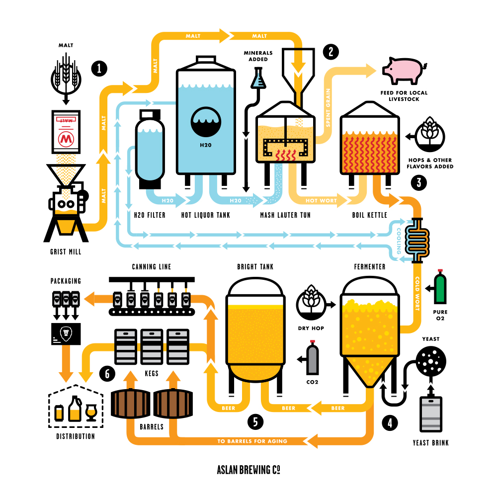

1. Milling - 1st step, is you start transferring your malt to the grist mill where your whole grain malt is crushed.
2. Mashing - After crushing the malt. 2nd step – is to transfer it to the Mash tun for a range of about a ½ hour to roughly 2 hrs. This is where you combine the malt with extremely hot water. Now, the hot water temp. in the mash tun usually ranges 144-158 degrees F. In the mash tun the starches in the malt begin to turn into sugar & those sugars, (known as wort), are what you continue to use in your brewing process.
(Now, 1 cool fact about the water in the mash tun is depending on what style beer they are making, a lot of breweries strip the minerals from their local water and add in other minerals to match another country’s water of where that style of beer originated from. It makes the beer even that much better and unique!)
3. Boiling - Now, 3rd step, once you’re done with the mash tun, breweries take the remaining spent grain they don't don’t use and give to local farmers to feed their livestock. Then they transfer the hot wort they do use to the boiling kettle. As you Probably guess from name ‘boiling kettle’ you now bring wort to a boil typically 1-2 hrs. This step depending on what style beer be brewed, can add certain flavors/hops to your brew.
4. Fermentation - Next, when finished with the kettle, the 4th step is where you begin to transfer beer into fermenters. A fermenter is where you let beer ferment for a certain time period before moving it into serving tanks. This is where the brewer adds yeast (called pitching the wort) and will also start the dry hopping process if they plan to hop up their beer. Now, for the transferring process it is a lot more time consuming than transferring it from 1 tank to another. This process must have a heat exchanger to cool beer before it hits the fermenters. The fermenter allows for controlled cooling to a specific temperature usually 60-70 degrees F depending on the style of beer. Once you cooled the beer & the transfer to the fermenter is complete you move on to the 5th step.
5. Adding the Yeast - The brewer will add the yeast into fermenter (called pitching yeast). After about 1 week of letting the beer ferment, in that time period the yeast will have consumed all sugars that were created in the mash tun & will have turned into alcohol & carbon dioxide. Once fermentation process is complete, brewer will cool beer again to 30 degrees F, which is called the conditioning process. This process helps clarify the beer & collect yeast for re-use in next beer.
5. Racking - The 5th step, at the end of conditioning phase, the beer is transferred to ‘Bright tank’ where beer gets carbonated & put into serving tanks at brewing establishment
6. Distribution - Lastly, They keg off, bottle, and/or can the beer to be distributed outside of establishment.
